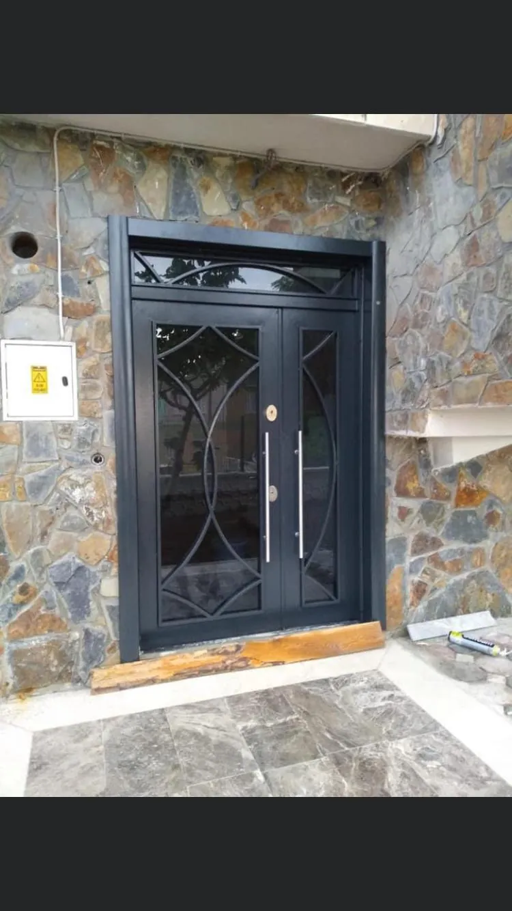
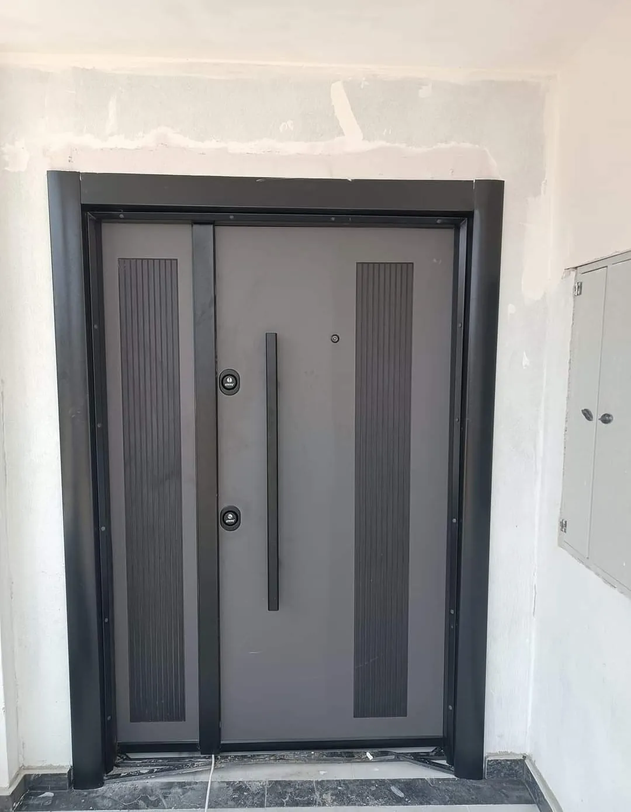
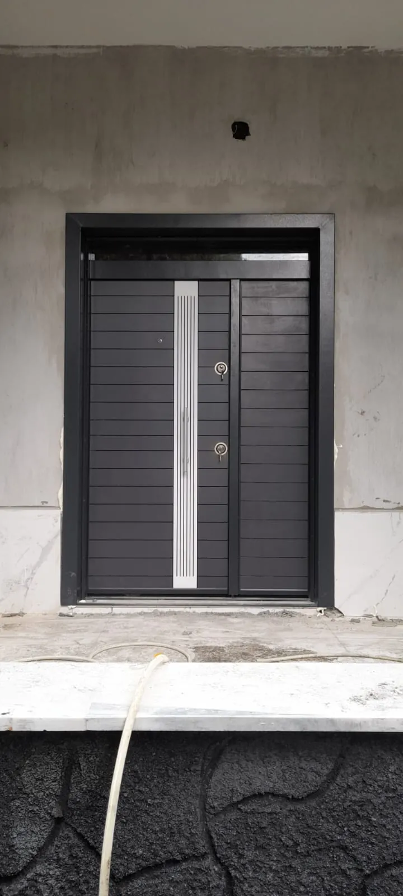
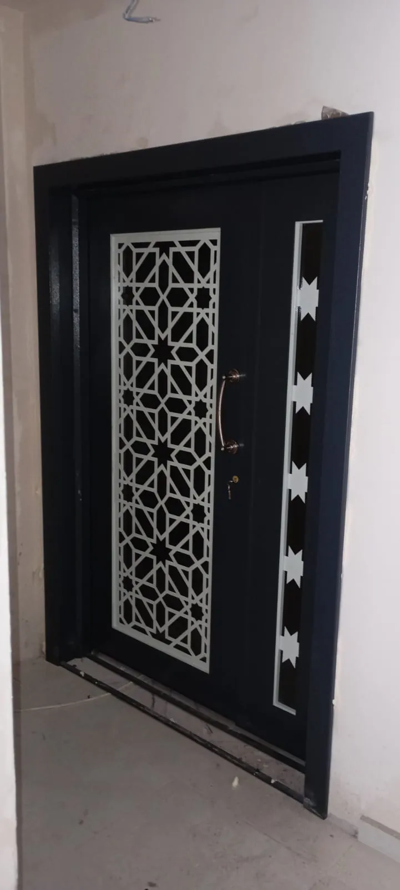
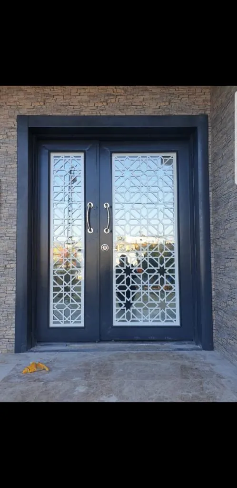
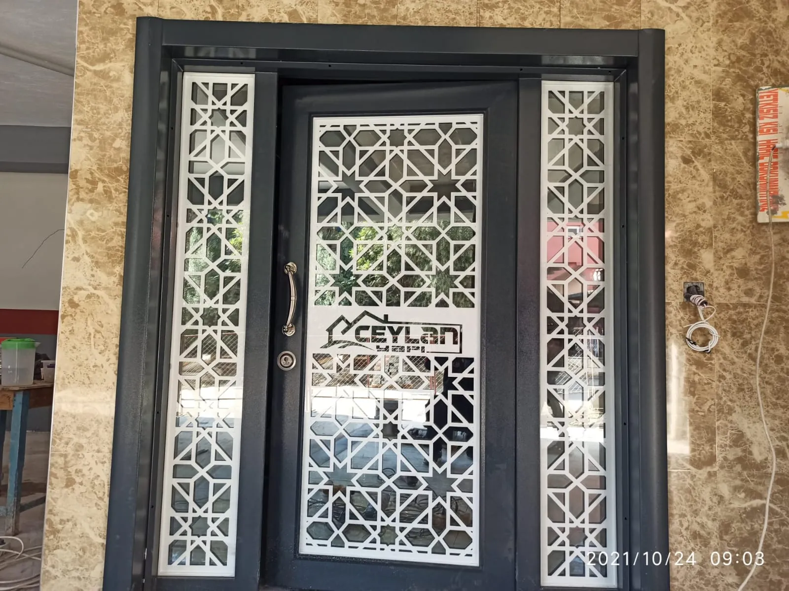

Apartman Kapısı Modelleri ve Fiyatını Belirleyen Unsurlar
Apartman kapısı, bir binada yaşayan herkesin ortak güvenlik noktasıdır. Sağlam bir apartman kapısı hırsızlığa karşı ilk engeli oluşturur, soğuğu ve gürültüyü dışarıda bırakır, binaya da bakımlı bir görünüm kazandırır. Osmaniye'de üretim yapan Emin Kapı olarak, doğru modeli seçmenize yardımcı olacak bilgileri bu yazıda topladık.

Apartman Kapısı Çeşitleri Nelerdir?
Günlük dilde apartman kapısı iki farklı ürün için kullanılır. İkisinin ihtiyacı birbirinden farklıdır, bu yüzden önce hangisini aradığınızı netleştirmek gerekir.
Apartman Ana Giriş Kapısı
Binanın sokağa açılan kapısıdır. Gün boyu çok sık kullanıldığı için güçlü menteşe, hidrolik kapatıcı ve otomatla açılan elektrikli kilit ister. Genellikle camlı, çelik gövdeli veya alüminyum doğramalı üretilir.
Apartman Daire Kapısı
Her dairenin kendi giriş kapısıdır ve bugün neredeyse tamamı çelik kapıdır. Burada öncelik çok noktadan kilitleme, ses ve ısı yalıtımı ile iç dekorasyona uyan kaplamadır. Daire girişleri için Osmaniye çelik kapı modellerimizi inceleyebilirsiniz.
Apartman Kapısı Seçerken Dikkat Edilecek 5 Nokta
- Güvenlik seviyesi: Sac kalınlığı, kasa yapısı ve kilit sayısı kapının direncini belirler. Zemin kat ve giriş kapılarında bu konu daha da önemlidir.
- Kilit ve geçiş sistemi: Ana girişte diafonla uyumlu elektrikli kilit; dairelerde çok noktadan kilitlenen, kopyalanması zor anahtarlı silindir tercih edilmelidir.
- Yalıtım: Kaliteli fitil ve dolgu, merdiven boşluğundan gelen sesi ve soğuğu belirgin biçimde azaltır.
- Dış etkenlere dayanım: Güneş ve yağmur alan girişlerde solmayan, şişmeyen yüzey kaplaması gerekir.
- Ölçüye özel üretim: Eski binalarda kapı boşlukları standart değildir. Yerinde ölçü alınmadan üretilen kapı, sürtme ve boşluk sorunlarına yol açar.
Apartman Kapısı Modelleri: Hangi Malzeme Daha İyi?
| Model | Güçlü yönü | Dikkat edilecek nokta |
|---|---|---|
| Çelik apartman kapısı | En yüksek güvenlik, uzun ömür | Dış cephede kaplama türü doğru seçilmeli |
| Camlı apartman kapısı | Aydınlık ve ferah giriş | Cam temperli veya lamine olmalı |
| Alüminyum doğramalı | Hafif, paslanmaz, modern | Kilit altyapısı güçlendirilmeli |
| Ferforje süslemeli | Klasik ve gösterişli | Boya bakımı düzenli yapılmalı |
Tek bir doğru cevap yoktur. Kalabalık ve işlek bir sokakta çelik gövde öne çıkarken, karanlık bir merdiven holü için camlı model daha doğru bir seçimdir. Bina girişlerine özel seçenekler için Osmaniye kapı modelleri sayfamıza bakabilirsiniz.
Apartman Kapısı Fiyatları Nasıl Belirlenir?
Apartman kapısı fiyatları ölçüye ve seçilen donanıma göre değişir. Aynı model, iki farklı binada farklı fiyata çıkabilir. Fiyatı etkileyen başlıca kalemler:
- Kapı ölçüsü ve kanat sayısı
- Gövde malzemesi ve sac kalınlığı
- Kilit tipi, kapatıcı ve çekme kol
- Cam yüzeyin büyüklüğü ve cam türü
- Kaplama, renk ve desen tercihi
- Söküm, montaj ve nakliye
Karşılaştırma yapabilmeniz için Osmaniye çelik kapı fiyatları sayfamızı da hazırladık. En doğru fiyat ise yerinde alınan ölçüyle verilir.
Osmaniye'de Apartman Kapısı İçin Neden Emin Kapı?
Emin Kapı, Osmaniye'de 15 yılı aşkın süredir çelik kapı ve iç oda kapısı üreten yerel bir firmadır. Üretici olduğumuz için renk, desen ve ölçüde hazır ürünle sınırlı kalmazsınız; ayrıca satış sonrası servise ihtiyaç duyduğunuzda muhatabınız aynı şehirdedir.
Osmaniye merkez, Kadirli, Düziçi, Bahçe, Toprakkale, Hasanbeyli ve Sumbas'ta montaj yapıyoruz. Ceyhan, Kozan, Erzin, Dörtyol, Nurdağı ve İslahiye gibi komşu ilçelerdeki apartman yönetimlerine ve müteahhitlere de hizmet veriyoruz.







Sıkça Sorulan Sorular
Apartman kapısı değişimi için tüm kat maliklerinin onayı gerekir mi?
Ana giriş kapısı ortak alan sayıldığı için karar apartman yönetimi veya kat malikleri kurulu tarafından alınır. Daire kapınızı ise kendiniz yeniletebilirsiniz; yalnızca dış yüzeyin binanın genel görünümüne uygun olması beklenir.
Eski apartman kapısı aynı gün değişir mi?
Kapı önceden ölçüye göre üretildiği için söküm ve montaj çoğu zaman aynı gün içinde tamamlanır. Bina o gece kapısız kalmaz.
Diafon ve otomat sistemimiz yeni kapıya uyar mı?
Evet. Ölçü sırasında mevcut sisteminize bakıyor, kilidi buna uygun seçiyoruz.
Apartman Kapısı İçin Hemen Bilgi Alın
Binanıza ya da dairenize uygun apartman kapısı için Emin Kapı'yı arayın: 0542 236 236 5. Fabrikamız Adnan Menderes Mah. Trafo Cd. No: 6/A Osmaniye adresindedir.
Rehber